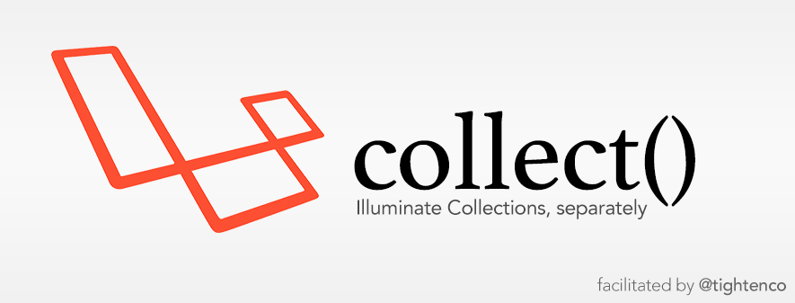

No loops needed - Functional programming in PHP
PHP USERGROUP DRESDEN
28.05.2018
About me
Alexander Lichter
- PHP developer for ~5 years
- self-employed since 2015
- Studying CS @ TUD in the meantime
- Went from backend to fullstack-dev
- ❤️ SPA, using PHP almost API-only now

Functional Programming
Before we start...
I have some questions! Who...
- ...heard of "Functional programming" before?
- ...tried it?
- ...uses it in daily programming?
What is functional programming?
A bunch of buzzwords
- stateless
- composition
- pure
- side effects
- monad
- referential transparency
- determinism
- immutability
- currying
- ...
What is functional programming?
A programming paradigm 🎉
But what's that actually?🤔
Mindset/World view
Imperative
Procedural
Object-oriented
Declarative
Functional
Logic
Imperative vs. Declarative
Example scenario
Filter all people that are at least 18 years old
Imperative programming
Describes "how to do"
class Person
{
public $name;
public $age;
public function __construct(string $name, int $age)
{
$this->name = $name;
$this->age = $age;
}
}
$people = [
new Person('Taylor', 35),
new Person('Rasmus', 58),
new Person('Carl', 16),
new Person('Ralph', 12)
];
$peopleOver17 = [];
foreach ($people as $person){
if ($person->age >= 18) {
$peopleOver17[] = $person;
}
}
var_dump($peopleOver17); // The array contains the two person objects (Taylor and Rasmus)
Declarative programming
Describes "what to do"
SQL
One of the best declarative examples
SELECT * FROM people WHERE age >= 18
Okay, we know what's declarative now.. but what is functional programming?
Functional programming means that...
- ...everything is a (pure) function
- ...shared state should be avoided
- ...all data should be immutable
That means we follow limitations
(At least during the talk)
- No (value) assignments
- No mutable state
- No loops
Okay, let's build a program with the tools of FP!
1. Use pure functions!
But what's that 😲
A pure function:
- only depends on its inputs
- only returns something
$name = "PHP Usergroup Dresden";
function greet()
{
global $name;
echo "Hi $name!";
}
greet(); // Hi PHP Usergroup Dresden!
$name = "all";
greet(); // Hi all!
Impure!
function greet($name) : string
{
return "Hi $name!";
}
$name = "PHP Usergroup Dresden";
greet($name); // Hi PHP Usergroup Dresden!
$name = "all";
greet($name); // Hi all!
Pure!
Any Benefits? Yes!
- Predictable
- Highly reusable
- Unproblematic parallel execution
- Great testability
- Always cacheable
- Clear structure, reduced cognitive load
Remember the scenario from before?
Let's build a pure function for it!
function peopleOver17($people)
{
$peopleOver17 = [];
foreach ($people as $person) {
if ($person->age >= 18) {
$peopleOver17[] = $person;
}
}
return $peopleOver17;
}
But what if we want to enter a variable age?
function peopleOverAge($people, $age)
{
$peopleOverAge = [];
foreach ($people as $person) {
if ($person->age >= $age) {
$peopleOverAge[] = $person;
}
}
return $peopleOverAge;
}
But what if we want to see if the first letter starts with T instead?
function peopleWithNameStartingWithT($people)
{
$result = [];
foreach ($people as $person) {
if (strpos($person->name, 'T') === 0) {
$result[] = $person;
}
}
return $result;
}
No problem.. But it seems like we are repeating code again and again
Can we generalize this further?
Spoiler: yes
Higher Order Functions
Functions that take other functions as argument
$twice = function(callable $f, $v){
return $f($f($v));
};
$add3 = function($v){
return $v + 3;
};
$twice($add3, 7); // 13
Why does that work?
In PHP (since 5.3), functions are first-class citizens. They can be:
- returned from functions
- passed into functions as arguments
- assigned to variables
Let's build one!
$filter = function(callable $f, array $collection) {
$result = [];
//Do sth here
return $result;
};
$filter = function (callable $f, array $collection) {
$result = [];
foreach ($collection as $item) {
if ($f($item)) {
$result[] = $item;
}
}
return $result;
};
Tada! Our own filter function
$people = [
new Person('Taylor', 35),
new Person('Rasmus', 58),
new Person('Carl', 16),
new Person('Ralph', 12)
];
$above18 = function (Person $p) {
return $p->age >= 18;
};
$filter($above18, $people);
We can also inline it
$people = [
new Person('Taylor', 35),
new Person('Rasmus', 58),
new Person('Carl', 16),
new Person('Ralph', 12)
];
$filter(function (Person $p) {
return $p->age >= 18;
}, $people);
2. Ditch loops for filter, map, each and reduce
Filter
$people = [
new Person('Taylor', 35),
new Person('Rasmus', 58),
new Person('Carl', 16),
new Person('Ralph', 12)
];
$olderPeople = array_filter($people, function (Person $p) {
return $p->age >= 18;
}));
Passes each array item to the callback function. If the function returns true, the item is included in the result array.
Get names of all people
$people = [
new Person('Taylor', 35),
new Person('Rasmus', 58),
new Person('Carl', 16),
new Person('Ralph', 12)
];
$names = [];
foreach($people as $person){
$names[] = $person->name;
}
Map
$people = [
new Person('Taylor', 35),
new Person('Rasmus', 58),
new Person('Carl', 16),
new Person('Ralph', 12)
];
array_map(function (Person $p) {
return $p->name;
}), $people); // ['Taylor','Rasmus','Carl','Ralph']
Passes each array item to the callback function. The return value of that function will be included in the result array.
Each
$people = [
new Person('Taylor', 35),
new Person('Rasmus', 58)
];
array_walk($people, function (Person $p) {
echo $p->name ." "; // Impure, yeah
})); // 'Taylor Rasmus '
- Like map, but does not return anything
- Only use for actions, do not use for transformation
Don't do that!
$people = [
new Person('Taylor', 35),
new Person('Rasmus', 58)
];
$sumAge = function (array $collection) {
$age = 0;
array_walk($collection, function (Person $p) use (&$age) {
$age += $p->age;
});
return $age;
};
Reduce
$people = [
new Person('Taylor', 35),
new Person('Rasmus', 58)
];
$sumAge = function ($accumulatedAge, Person $person) {
return $accumulatedAge + $person->age;
};
array_reduce($people, $sumAge); //End result: 93
Passes each array item to the callback function. The return value of that function will be used as first parameter (accumulator) in the next call. Does return whatever you like to.
Reduce #2
$people = [
new Person('Taylor', 35),
new Person('Rasmus', 58)
];
$concatNames = function (string $names, Person $person) {
return $names . $person->name . " ";
};
array_reduce($people, $concatNames, ""); // "Taylor Rasmus "
Takes initial accumulator value as 3rd argument (optional).
Tip: Don't use the vanilla implementation
- No method chaining possible
- Weird method signature (see array_map)
- Don't reinvent the wheel
Use collections!
 https://github.com/tightenco/collect/Final comparsion:
Get the average age of all people that have an "a" in their name
Imperative
$ages = [];
foreach ($people as $person) {
if (strpos($person->name, "a") !== false) {
$ages[] = $person->age;
}
}
$result = array_sum($ages) / count($ages);
Functional (with collections)
$nameContains = function (string $toContain) {
return function (Person $p) use ($toContain) {
return strpos($p->name, $toContain) !== false;
};
};
$result = collect($people)
->filter($nameContains("a"))
->pluck('age') // maps to the age property
->avg();
Benefits?
- All benefits from pure functions
- Declarativity at it's finest!
- Compose things step by step
- No more nested loops
There must be a snag, right? Yup!
- Default interface isn't designed intuitively ("solved" with collections)
- Steep learning curve
- Worse performance in comparison to imperative/OO (PHP-related)
Is this everything? Nope!
- Recursion and Tail Call Optimization
- Currying
- Pipelines
- ...
Concluding Words
Some awesome links
- Slides: https://github.com/manniL/fp-in-php
- Laravel collections: https://github.com/tightenco/collect/